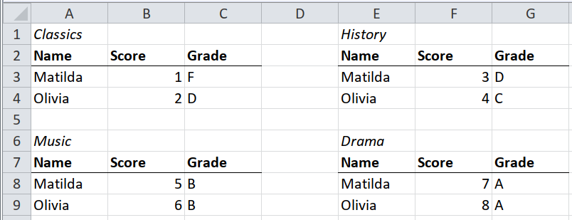
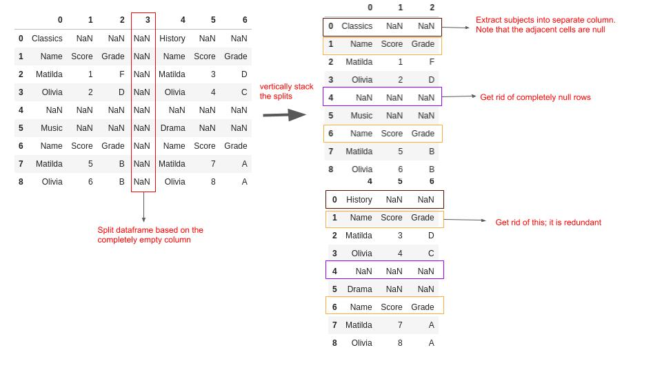
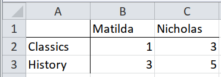
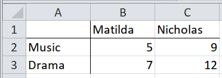
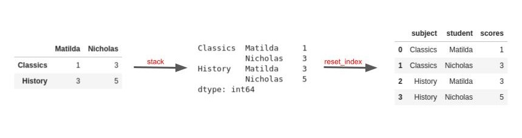
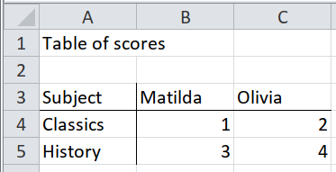
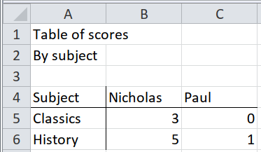
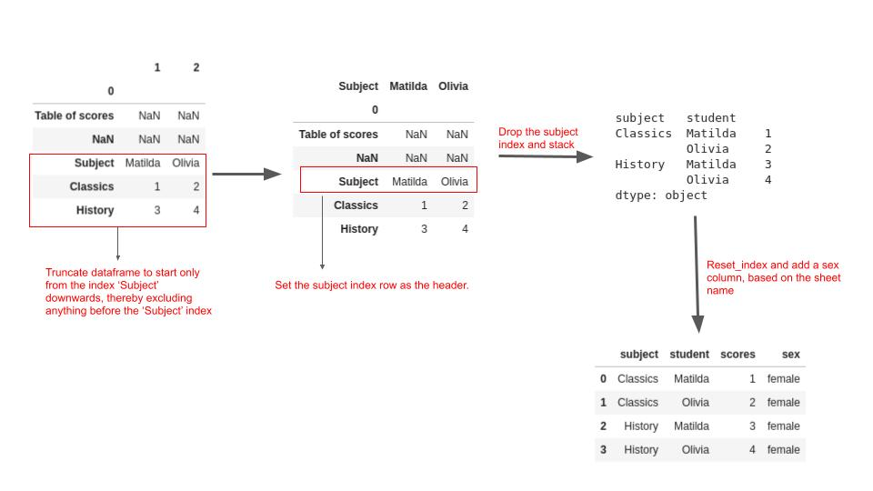
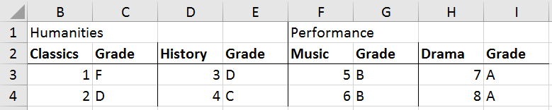
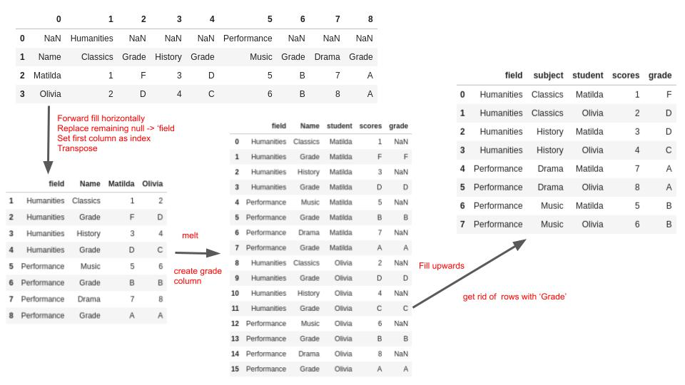

SpreadSheet Munging Strategies in Python - Small Multiples#
Small Multiples#
updated : April 14, 2022
This is part of a series of blog posts about extracting data from spreadsheets using Python. It is based on the book written by Duncan Garmonsway, which was written primarily for R users. LInks to the other posts are on the homepage.
Small multiples refer to mini tables embedded in a spreadsheet, or multiple spreadsheets. Ideally, this tables should be lumped into one dataframe for meaningful analysis. The examples below show different scenarios and how we can reshape the data
Case 1 : Small Multiples with all Headers Present for Each Multiple#

In this spreadsheet, each table is a separate subject. It would be better to aggregate all the subjects and underlying data into one table.
import pandas as pd
import janitor
import numpy as np
excel_file = pd.ExcelFile("Data_files/worked-examples.xlsx", engine='openpyxl')
df = excel_file.parse(sheet_name="small-multiples", header=None)
df
| 0 | 1 | 2 | 3 | 4 | 5 | 6 | |
|---|---|---|---|---|---|---|---|
| 0 | Classics | NaN | NaN | NaN | History | NaN | NaN |
| 1 | Name | Score | Grade | NaN | Name | Score | Grade |
| 2 | Matilda | 1 | F | NaN | Matilda | 3 | D |
| 3 | Olivia | 2 | D | NaN | Olivia | 4 | C |
| 4 | NaN | NaN | NaN | NaN | NaN | NaN | NaN |
| 5 | Music | NaN | NaN | NaN | Drama | NaN | NaN |
| 6 | Name | Score | Grade | NaN | Name | Score | Grade |
| 7 | Matilda | 5 | B | NaN | Matilda | 7 | A |
| 8 | Olivia | 6 | B | NaN | Olivia | 8 | A |
Observations :
There is a completely empty column that splits the tables, and a completely empty row as well. We’ll use the coordinates in our data reshaping
For each table, the subject is directly above. We’ll use the empty cells adjacent to it as a criteria to create a subject column
#get the first three columns before the completely null column
before_null = df.iloc[:,:3]
#get the columns after the completely null column
after_null = df.iloc[:,4:].set_axis([0,1,2],axis=1)
(pd
.concat((before_null, after_null))
.set_axis(['Name','Score','Grade'],axis=1)
.query('Name != "Name"')
.dropna(subset=['Name'])
.assign(subject = lambda x: np.where(x.Score.isna(),
x.Name,
np.nan)
)
.assign(subject = lambda df: df.subject.ffill())
.dropna()
.reset_index(drop = True)
)
| Name | Score | Grade | subject | |
|---|---|---|---|---|
| 0 | Matilda | 1 | F | Classics |
| 1 | Olivia | 2 | D | Classics |
| 2 | Matilda | 5 | B | Music |
| 3 | Olivia | 6 | B | Music |
| 4 | Matilda | 3 | D | History |
| 5 | Olivia | 4 | C | History |
| 6 | Matilda | 7 | A | Drama |
| 7 | Olivia | 8 | A | Drama |
The image below illustrates the main concepts of the above code.

Case 2 : Same table in several worksheets/files (using the sheet/file name)#


For this case, our data is in different worksheets. We can iterate through each worksheet and combine the dataframes into one.
extract = [excel_file.parse(sheet_name=sheetname, index_col=0)
for sheetname in ("humanities", "performance")]
extract
[ Matilda Nicholas
Classics 1 3
History 3 5,
Matilda Nicholas
Music 5 9
Drama 7 12]
Combine the individual dataframes into one:
(pd
.concat(extract)
.rename_axis(index = 'subject', columns='student')
.stack()
.rename('scores')
.reset_index()
)
| subject | student | scores | |
|---|---|---|---|
| 0 | Classics | Matilda | 1 |
| 1 | Classics | Nicholas | 3 |
| 2 | History | Matilda | 3 |
| 3 | History | Nicholas | 5 |
| 4 | Music | Matilda | 5 |
| 5 | Music | Nicholas | 9 |
| 6 | Drama | Matilda | 7 |
| 7 | Drama | Nicholas | 12 |
The image below illustrates the core concepts of the above solution:

Case 3 : Same table in several worksheets/files but in different positions#


This is similar to Case 2, with the core data been the same. Here we need to pick rows from Subject downwards only, as that is the only relevant data:
extract = {sheetname : excel_file.parse(sheet_name=sheetname, header = None, index_col=0)
.loc['Subject':]
# use the subject row as column names
.pipe(lambda df: df.set_axis(df.loc['Subject'], axis = 1))
.drop(index='Subject')
.rename_axis(index = 'subject', columns = 'student')
for sheetname in ("female", "male")}
extract
{'female': student Matilda Olivia
subject
Classics 1 2
History 3 4,
'male': student Nicholas Paul
subject
Classics 3 0
History 5 1}
Combine the individual dataframes into one:
(pd
.concat(extract, names=['sex'])
.stack()
.rename('scores')
.reset_index()
)
| sex | subject | student | scores | |
|---|---|---|---|---|
| 0 | female | Classics | Matilda | 1 |
| 1 | female | Classics | Olivia | 2 |
| 2 | female | History | Matilda | 3 |
| 3 | female | History | Olivia | 4 |
| 4 | male | Classics | Nicholas | 3 |
| 5 | male | Classics | Paul | 0 |
| 6 | male | History | Nicholas | 5 |
| 7 | male | History | Paul | 1 |
The image below explains the main concepts of the solution above :

Case 4 : Implied multiples#

For this case, we have the fields at the top, followed by the subjects and grade for each subject. the student names is the very first column.
The goal is to get the subjects,grades and scores per field, per student and combine into one.
(excel_file
.parse(sheet_name='implied-multiples', header=None)
.ffill(axis=1)
.replace({np.nan : 'field'})
.set_index(0)
.T
.melt(id_vars = ['field','Name'],
var_name = 'student',
value_name = 'scores'
)
.assign(grade = lambda x: x.loc[x.Name == "Grade", 'scores'])
#scores are above grades per student
#hence the bfill
.bfill()
.query('Name != "Grade"')
.rename(columns={'Name':'subject'})
)
| field | subject | student | scores | grade | |
|---|---|---|---|---|---|
| 0 | Humanities | Classics | Matilda | 1 | F |
| 2 | Humanities | History | Matilda | 3 | D |
| 4 | Performance | Music | Matilda | 5 | B |
| 6 | Performance | Drama | Matilda | 7 | A |
| 8 | Humanities | Classics | Olivia | 2 | D |
| 10 | Humanities | History | Olivia | 4 | C |
| 12 | Performance | Music | Olivia | 6 | B |
| 14 | Performance | Drama | Olivia | 8 | A |
And a visual illustration of the steps is shown below:
